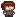

La historia
En Histeria controlas a Eli, una joven que en su 18 cumpleaños vive un momento que marcará su vida para siempre. Deberás entrar en la mente de Eli y ayudarla a recuperar el control de sus emociones haciendo frente a sus miedos.
